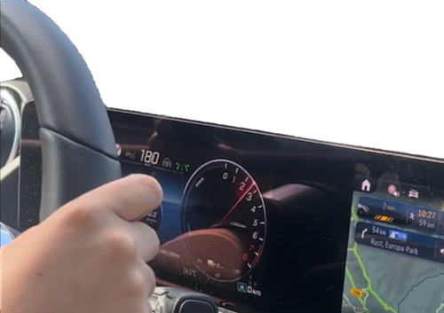
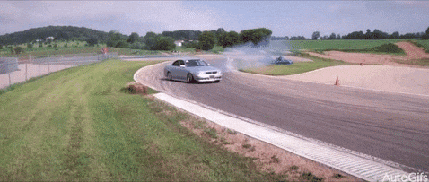
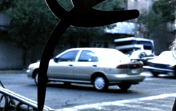
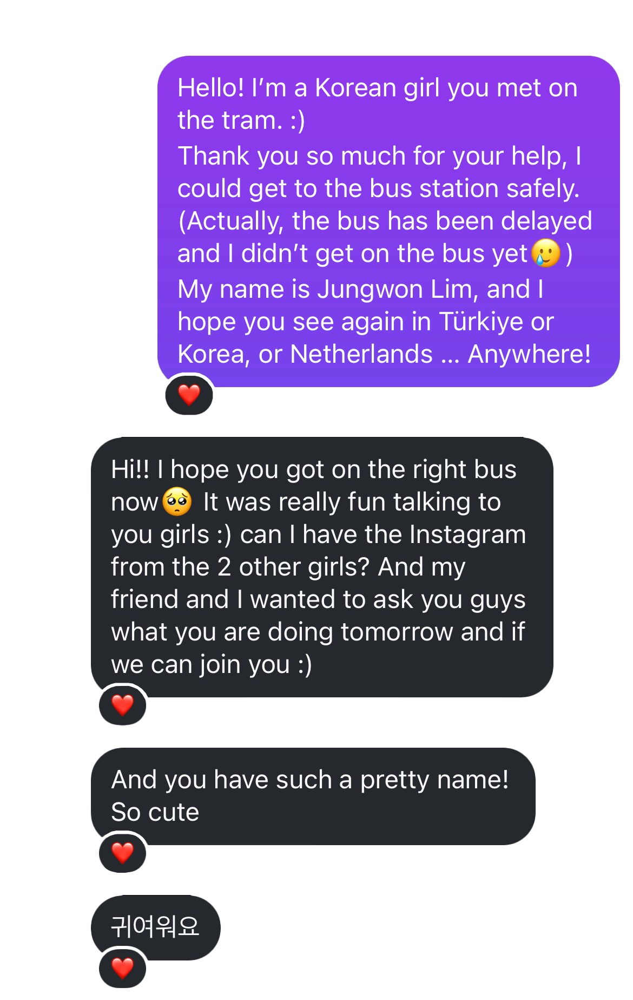
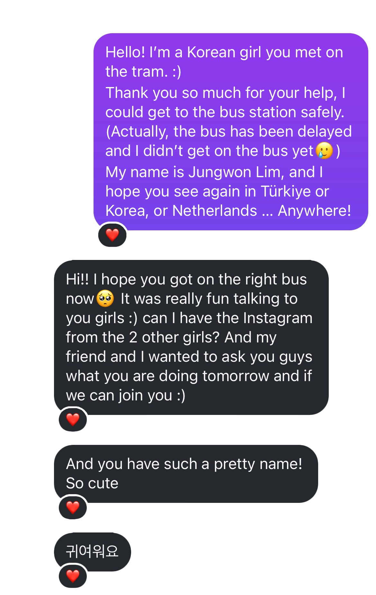

EP 2. 그 유명한 독일 아우토반에서 죽을뻔한 썰
학기 종강 직후, 평소 매우 친하게 지내던 독일인 친구
Leonie의 본가에 초대받아 독일 서남부의 Karlsruhe라는
작은 도시에 2박 3일 동안 머무르게 되었다.

^ Leoine네 집 작은 뒷마당. 매우 평화롭다
사실 독일에 오기 전, 유럽 최대 놀이공원인 유로파 파크
(Europa-park)에 가는 것이 버킷리스트였는데 이곳은 차 없이 가기
힘들다 하여 마음을 접고 있었다. 그러나 친구는 독일인답게
굉장히 운전을 잘했고(!) 무엇보다 카를스루에에서는 한 시간밖에 걸리지 않아서 유로파파크에 가기로 했다!
근데 그거 아세요?
독일 고속도로인
아우토반에서는
속도제한이 없다는 점…
Das ist die Deutsche Autobahn!

^ 계기판 주목
음… 한국에서는 100km/h도 굉장히 빠른 편인데 친구는 망설임 없이
180km/h까지 밟았다. 오케이! 솔직히 좀 많이 무서웠지만 워낙 든든한 친구라 믿고 아무렇지도 않은 척 했다. 그리고 무엇보다 다른 차들은 시속 200은
기본으로 쌩쌩 달리더라. 어떻게 그러지……
그런데 문제는… 친구가 아무리 운전을 잘해도 다른 운전자가 운전을 못한다면
우리까지 위험해진다는 것.
이걸 간과했다! 그리고 항상 그렇듯… 방심하면 문제가 생긴다.
친구에게는 문제가 없었다. 전혀. 그런데 갑자기 오른쪽 차선의 앞차가
차선변경을 우리 앞쪽으로 하며 급정거를 해서 그대로 들이받을뻔 하고
(* 안전거리를 유지하였지만 시속 180으로 달리다 보면 안전거리고 뭐고
할 거 없다...) 우리도 차선을 변경하려 했으나 옆에서는 다른 차가 거의 시속 250의 속도로 쌩 하고 지나가서 거의 치일뻔 했다.

^ 아우토반 절망편... 진짜루
이 모든 일은 2초만에 일어났다. 정작 조수석에 있던 나는 정말
정신이 하나도 없이 혼비백산해서 진이 빠져 있는데 역시
베스트 드라이버 친구는 침착하게 비속어 한마디 내뱉고(...)
속도를 유지하며 이런 일이 생기게 해서 미안하다고 괜찮냐며
나를 걱정해 주었다.(sweet girl)
눈 앞에 천국이 잠깐 왔다 갔지만 나는 괜찮았어 네 잘못이 아니었잖아…

^ 그래도 놀이공원 무사도착^^
아무튼 이런 돈 주고도 다시는 못 할 아찔한 경험을 뒤로 한 채… 놀이공원에 가서 즐겁게 놀았다 :)
* 비록 좋지 않은 경험을 서술했지만,,, Leonie는 나에게 정말 소중한 친구다. 디자인과 교환학생 중 동양인이 나밖에 없었음에도
엄청나게 잘 챙겨주었고 독일어로 쓰여 있는 학식 메뉴를 나를 위해 늘 영어로 번역해 주었다. 인종이 다르고 문화권도 다르지만
그럼에도 이렇게까지 마음이 잘 맞는 친구가 있을 수 있다는 것을 알게 해준 친구이기에! Danke für alles Leonie <3


 
